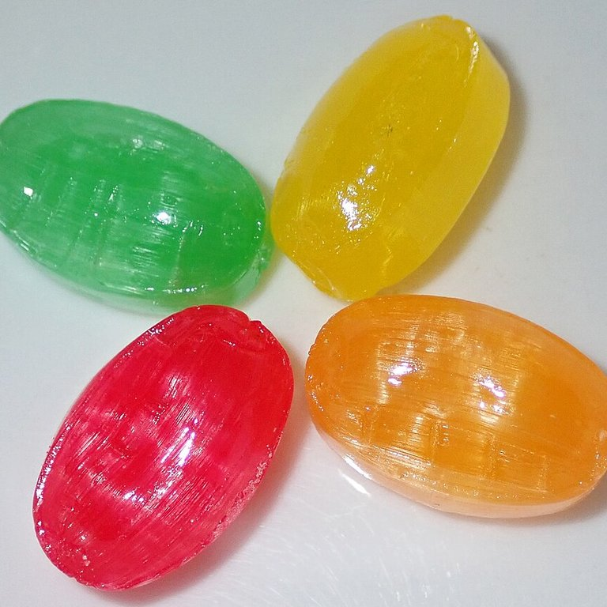
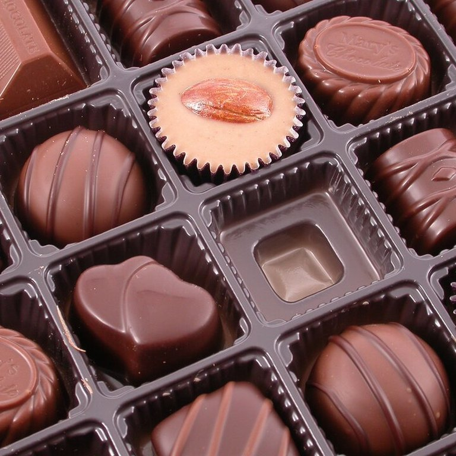
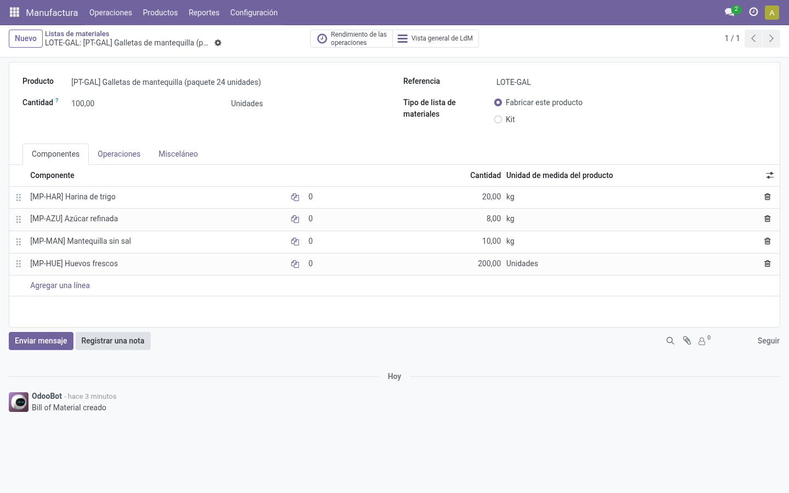
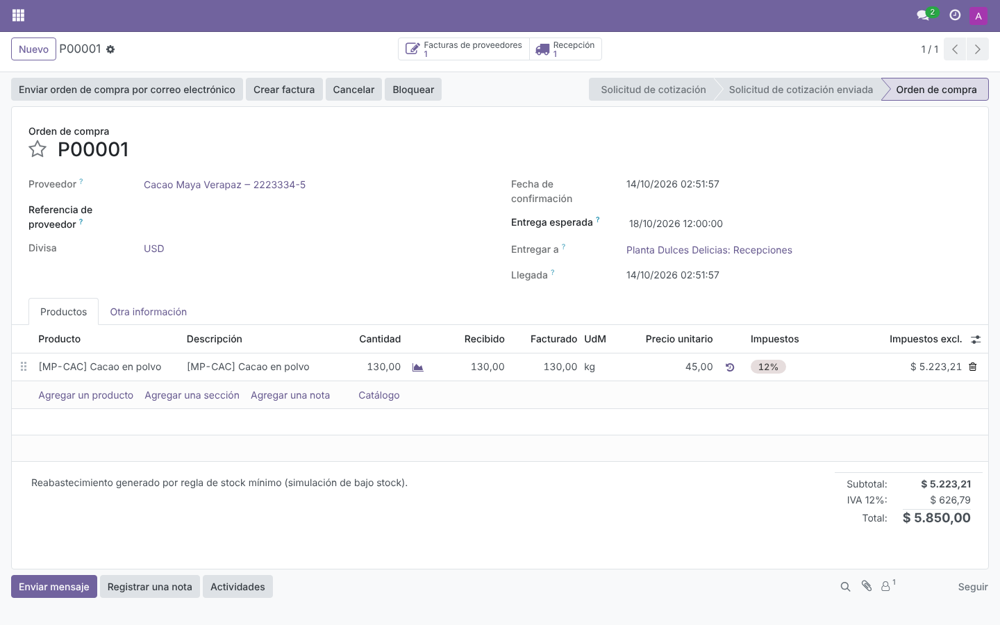
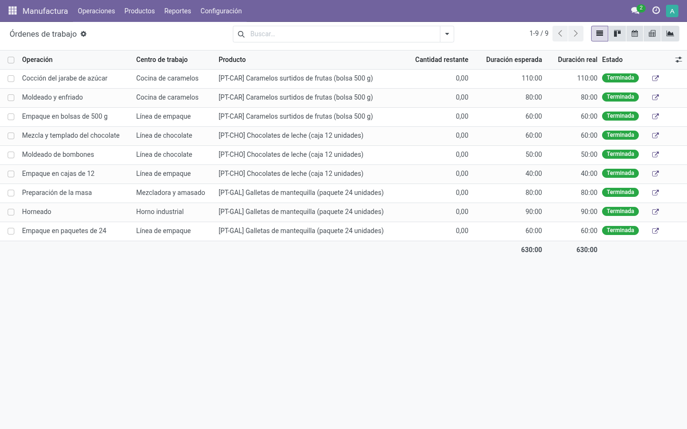
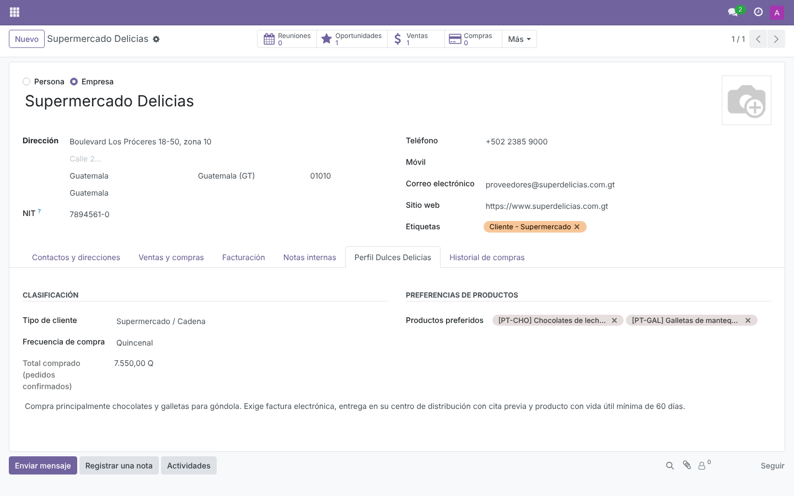
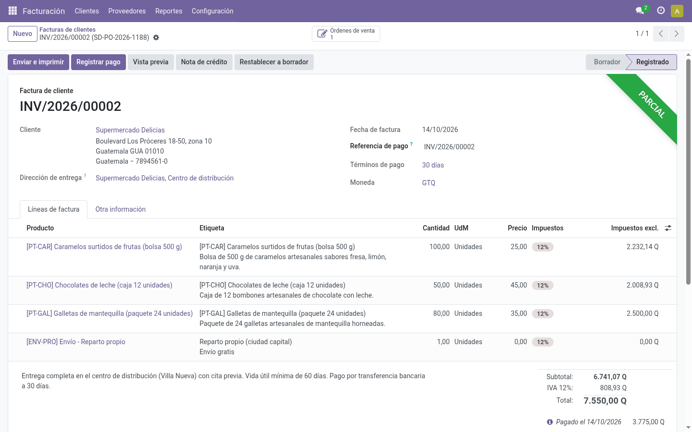
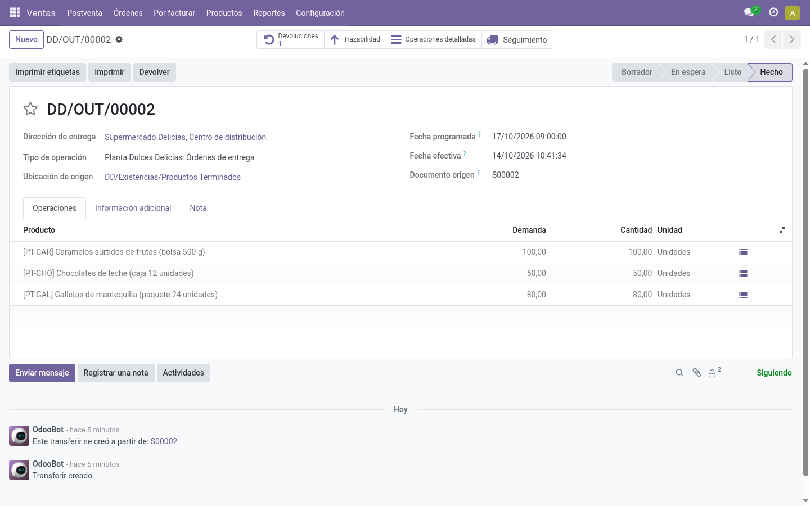
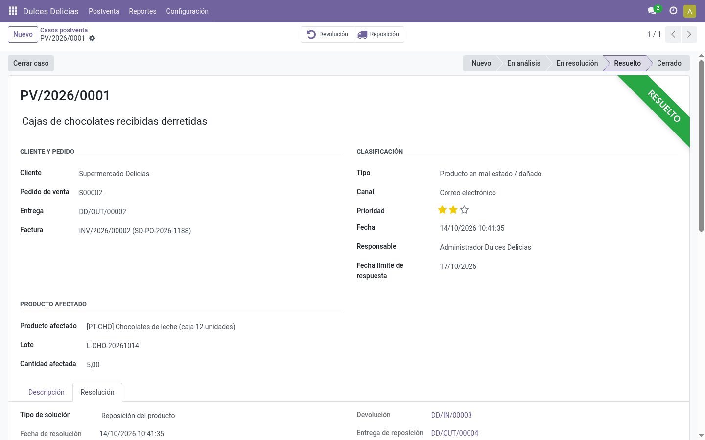
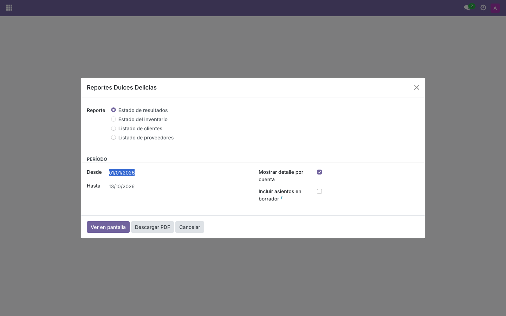

Dulces
Delicias S.A.
Del cacao a la factura: compras, producción, ventas y postventa en un solo sistema.
- Josué Say
- Pedro Guzmán
- Gustavo Cruz


Del cuaderno a un solo sistema
- Inventario contado a mano
- Se compra cuando "se nota" que falta
- Pedidos en cuadernos y hojas sueltas
- Reclamos que nadie registra
- La utilidad se conoce a fin de mes
de TOGAF
- Compras que se disparan solas por mínimo
- Pedido, entrega y factura enlazados
- Cada lote rastreable hasta su receta
- Reclamos con responsable y fecha
- Resultados de cualquier período, al momento
La tecnología apoya al negocio, no al revés.
Los cuatro dominios de TOGAF, aplicados
Los procesos del enunciado:
Las áreas del caso no son al azar: salen de este dominio.
Productos, recetas, lotes, clientes, proveedores y plan contable guatemalteco
8 apps de Odoo + 1 módulo propio
Odoo 17 · PostgreSQL 15 · Docker
¿Por qué Odoo y no SAP? Cubre los procesos del caso, no paga licencias y lo que le falta se programa.
Dos semanas de operación, en nueve paradas
Del 01/10 al 14/10/2026 · todo se muestra en vivo en Odoo
Cada producto sabe qué lleva
3 productos
terminados,
por lote
materias primas: 8 ingredientes + 3 empaques
Unidades: kg L unidades
Cacao: mín. 10 kg · máx. 40 kg
Cada insumo tiene su regla de mínimo y máximo.

Compramos antes de quedarnos sin cacao
Materias primas
En proceso
Terminados
Inventario inicial bajo el mínimo:
Al planificar las galletas, los huevos bajaron a 30 (mín. 60): Odoo pidió 330 huevos solo.

Tres lotes, con su tiempo y su costo real
| Lote | Cantidad | Tiempo | Costo unitario |
|---|---|---|---|
| Caramelos | 200 bolsas | 250 min | Q7.93 |
| Chocolates | 100 cajas | 150 min | Q11.66 |
| Galletas | 150 paquetes | 230 min | Q9.51 |
Paquete de galletas = Q5.64 de insumos + Q3.87 de mano de obra

Cada cliente, en su etapa y con su próximo paso
Prospecto · 20 %
Confitería La Dulzura
Surtido navideño
Q8,000
llamar para presentar catálogo
Negociación · 60 %
Supermercado Delicias
Contrato anual de chocolates
Q120,000
propuesta con 5 % de descuento
Cierre · ganado
Distribuidora Dulce Sabor
Pedido mayorista occidente
Q3,166
seguimiento post-entrega
Ficha de cada cliente
tipo · contacto · preferencias · historial de compras

Tres pedidos, tres condiciones distintas
| Pedido | Caram. · Choc. · Gall. | Pago | Entrega | Total |
|---|---|---|---|---|
| S00001 · La Dulzura | 50 · 20 · 30 | Inmediato | Reparto propio, parcial permitida | Q3,200.00 |
| S00002 · Supermercado | 100 · 50 · 80 | 30 días | A su centro de distribución, todo junto | Q7,550.00 |
| S00003 · Dulce Sabor | 40 · 25 · 30 | 15 días | Transporte a Xela (Q150), −5 % | Q3,166.25 |
Cada pedido guarda su fecha comprometida, incoterm y orden de compra del cliente.
Vendido en la quincena
Q13,916.25
Tres formas de cobrar, un solo registro
Tarjeta de crédito
La Dulzura · Q3,200
Transferencia
Supermercado · Q3,775 de Q7,550
Contra entrega
Dulce Sabor · Q3,166.25

Entregado a tiempo: 3 de 3
10/10
11/10
12/10
La Dulzura
Antigua
Supermercado
Villa Nueva
Dulce Sabor
Quetzaltenango
Cada entrega sale de productos terminados con el lote fabricado.

Un reclamo resuelto en 18 horas
18 h
meta: 48 h o menos
Muy satisfecho
encuesta al cerrar

¿Ganamos dinero? Sí: 15.5 % de las ventas
Margen bruto
67.8 %
Margen neto
15.5 %
Período: 01/01 – 14/10/2026.
Cambie las fechas y se recalcula.
Cuatro reportes, en pantalla y en PDF

Estado del inventario
disponible, mín./máx., alerta y valor por ubicación y lote
Listado de clientes
tipo, contacto, plazo, preferencias y monto facturado
Listado de proveedores
contacto, plazo, qué suministra y monto comprado
Nadie hizo un asiento contable a mano
Cada operación genera su asiento: el estado de resultados sale solo.
Cada métrica con su meta y su decisión
| Métrica | Resultado | Meta | Decisión que permite |
|---|---|---|---|
| Entregas a tiempo | 100 % | ≥ 95 % | Cambiar transportista o fecha prometida |
| Resolución de reclamos | 18 h | ≤ 48 h | Más personal en postventa |
| Reclamos de chocolate | 5.3 % | ≤ 1 % | Cambiar empaque y transporte fuera de meta |
| Satisfacción del cliente | 5 de 5 | ≥ 4 | Revisar la atención si baja |
| Margen bruto del chocolate | 71.0 % | — | Cuánto descontar en el contrato anual |
Odoo no es el valor; es el medio.
¿Preguntas?
Gracias por su atención.
Bibliografía
- The Open Group. TOGAF Standard. opengroup.org/togaf
- Odoo S.A. Documentación de Odoo 17. odoo.com/documentation/17.0/es
- PeopleCert / AXELOS. ITIL 4. axelos.com
Fotos de productos: Wikimedia Commons (James St. John, CC BY 4.0; Bernd from Yokohama, CC BY-SA 2.0; sdnet01, CC0).